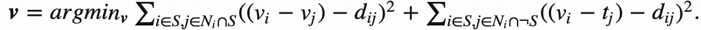

Overview
I use gradient domain processing to seamlessly clone a source image into a target image. Whereas a naive blend results in harsh edges, poisson blending creates smooth edges by enforcing gradient consistency.
Solving Least Squares for Blending
For Poisson blending, we solve the blending constraints in a least squares manner, solving for vector v of dimensions (hw * 1) that satisfies Av = b. A is a coefficient matrix of size (e * hw), where e is the number of equations/constraints. b is a known vector of size (e * 1). Our goal is to create an image v which enforces gradient consistencies. For each pixel i = (y,x) in our cropped source region (which we denote S), we define its four neighbors j = (y,x-1), (y,x+1), (y+1,x), (y-1,x). If j is in S, we enforce the consistency of gradient v with the source image. If j is not in S, then we require that vi matches the target. These computations are performed three times, once per channel (R, G, B).

For computational efficiency, I use a sparse matrix A and call scipy.sparse.linalg.lsqr(A, b) to obtain my solution v. If the input images were too large, I had to decrease the "ratio" parameter in main.py to scale down the images.
Mixed Blending
I also add a mixed blending method which uses the larger magnitude gradient (between the source and target) as guidance.

The following shows an output of mixed blending: